In hierdie hoofstuk gaan jy leer oor magnetisme. Jy gaan magnetiese velde ondersoek en jy gaan eksperimente doen om uit te vind watter tipes materiaal magneties is.
1.1 Wat is magnetisme? 2
1.2 Permanente magnete en magnetiese velde 5
1.3 Watter stowwe sal aan ’n magneet kleef? 11

Figuur 1: Die agterkant van ’n luidspreker kan gebruik word om sekere items mee op te tel!
1.1 Wat is magnetisme?
Sommige mense gebruik yskasmagnete om notas of lyste teen yskasdeure op te plak. Daar is selfs magnete wat in die vorm van woorde of letters is, wat teen yskasdeure geplak kan word. Die magnete laat die letters aan die metaal van die yskasdeure plak.
Kan jy aan ander maniere dink oor hoe ons magnete in ons daaglikse lewens kan gebruik?
In hierdie hoofstuk gaan jy oor verskillende tipes magnete leer en ook leer hoe hulle gebruik word in ons alledaagse lewens.
Duisende jare gelede het die mens ontdek dat ’n sekere tipe klip, yster aantrek. Hierdie klip is magneetsteen genoem. Mense het in daardie tyd geglo dat hierdie klip towerkragte het. Dele van die magneetsteen het ook ander dele van dieselfde klip aangetrek of weggestoot.
Die vermoë om yster aan te trek word magnetisme genoem.
Magnetisme is ’n krag wat voorwerpe met ’n magnetiese materiaal (soos yster) binne hulle, kan aantrek (nader bring) of weerstaan (weg stoot).
Ons weet nou dat magneetsteen ’n materiaal genaamd magnetiet bevat, en dit is ’n tipe ysteroksied. Ysteroksied is ’n chemiese samestelling van yster en suurstof. ‘Magneetsteen’ is ’n natuurlike magneet.
Figuur 2: Magneetsteen trek stukkies yster aan.
Alle magnete is in staat om ander magnete of magnetiese voorwerpe aan te trek. Magnetiese voorwerpe bestaan uit yster of sommige ander materiale.
Eksperimenteer met ’n magneet deur skuifspelde op te tel. Jy sal agterkom dat wanneer jy die magneet ver weg hou, niks gebeur nie. Sodra jy die magneet nader aan die skuifspelde beweeg, sal die skuifspelde skielik aan die magneet vasplak.
Dink na oor die volgende vrae:
- • Watter eienskappe van die magneet veroorsaak dat hierdie spesifieke voorwerpe aangetrek word?
Leerders hoef nie nou al die antwoord tot hierdie vraag te ken nie. Die
bespreking moet hulle laat dink oor hoe die magnete voorwerpe aan trek.
- • Moet ’n magneet aan ’n magnetiese voorwerp raak om dit nader te trek?
Nee, die magneet hoef nie aan die voorwerp te raak nie, solank dit net naby
genoeg aan die voorwerp kom. Lei die leerders in ʼn bespreking oor waarom die
magneet geen effek het wanneer dit ver weg van die voorwerp is nie. Daar is ʼn
area om die magneet wat die magneet toelaat om magnetiese voorwerpe aan te trek.
Om meer uit te vind oor magnetisme, doen die volgende ondersoek.
Aksienavorsing
Jy het die volgende nodig vir hierdie aktiwiteit:
- • ’n liniaal,
- • ’n skuifspeld, en
- • ten minste drie verskillende tipes magnete.
Plaas die liniaal plat neer op jou lessenaar. Plaas die skuifspeld so dat dit in lyn is met die nulmerk op die liniaal. Plaas een magneet aan die ander end van die liniaal. Beweeg die magneet stadig nader aan die skuifspeld, soos in die diagram gewys word. Die oomblik wanneer die skuifspeld na die magneet beweeg, moet jy ophou om die magneet te beweeg.
Figuur 3
Kyk na die meting op die liniaal om te sien hoe ver die magneet en die skuifspeld van mekaar af was voor hulle na mekaar begin beweeg het.
Doen die eksperiment weer met al jou magnete.
1. Vul die tabel in om die afstand waarop elke magneet die skuifspeld aangetrek het, aan te dui.
|
|
Afstand van skuifspeld |
|
Magneet 1 |
|
|
Magneet 2 |
|
|
Magneet 3 |
|
|
Magneet 4 |
|
Die doel van hierdie aktiwiteit is om leerders aan te moedig om meer te dink oor
die area rondom die magneet, en ook hoe voorwerpe, binne hierdie area van die
magneet, aangetrek kan word. Ons begin nou werk aan die konsep van ʼn
magnetiese veld. Dit berei ook die leerders voor om te besef dat die magnetiese
veld sterker is hoe nader dit aan die magneet is en dat dit swakker word hoe
verder weg dit van die magneet is. Waak egter teen die wanpersepsie dat die
magnetiese veld skielik stop en slegs in ʼn afgebakende gebied bestaan.
2. Watter magneet is die sterkste?
Lei ʼn bespreking met die leerders dat die sterker magneet die skuifspeld van ʼn
verdere afstand kan aan trek. Hulle antwoorde sal afhang van die tipe magnete
wat hulle gebruik.
3. Watter magneet is die swakste?
ʼn Swak magneet sal slegs die skuifspeld aan trek wanneer dit baie naby daaraan is.
Wat kan ons hieruit leer?
Daar bestaan ‘n onsigbare magnetiese veld rondom ‘n magneet. Die veld is sterker nader aan die magneet, en swakker wanneer dit verder weg is. Die magneet het geen effek op die skuifspeld totdat dit naby genoeg is om in die magnetiese veld te wees nie.
Sterker magnete kan magnetiese materiale van groter afstande aantrek as swakker magnete. Die rede hiervoor is dat ’n sterker magneet ’n groter magnetiese veld het.

‘n Paar vrae om te beantwoord
1. Noem drie situasies waar jy magnete gesien of gebruik het.
Vir deure wat moet toe bly sonder hakke. Byvoorbeeld: yskasdeure en sekere kasdeure.
Magnete word gebruik om items aan teen ʼn metaalbord vas te plak. Hulle kan gebruik
word vir kalenders; werkskedules of notas op metaal oppervlaktes soos yskasdeure.
Magnetiese kompasse.
Magnete kom voor in alle elektriese motors, en in huishoudelike apparate soos
bore, haardroërs, waaiers en wasmasjiene.
Magnete kom voor in alle rekenaars.
2. Hoe sal jy kan uitvind of ’n voorwerp magneties is of nie?
Hou ʼn stuk magnetiese materiaal (soos ʼn skuifspeld) naby die magneet om te
sien of die voorwerp aangetrokke is tot die magneet.
3. Jy het twee magnete, een is magneet A, wat die skuifspeld van 10 cm ver kan aantrek. Die ander magneet is magneet B, wat die skuifspeld van 12 cm ver kan aantrek. Watter magneet is die sterkste? Verduidelik jou antwoord.
Magneet B is sterker. Die magnetiese veld is groter, dus sal dit voorwerpe oor ʼn
groter afstand kan aan trek.
4. Hoekom kan ’n magneet oor ’n afstand ’n effek op die skuifspeld hê? Verduidelik jou antwoord in jou eie woorde.
Daar is ʼn onsigbare magnetiese veld rondom die magneet, wat sekere voorwerpe
aan trek.

1.2 Permanente magnete en die magnetiese velde
Jy het geleer dat magnete sekere voorwerpe aantrek omdat die voorwerpe ’n magnetiese veld om hulle het. ’n Voorwerp wat deur ’n magneet beweeg word, word ’n “tydelike” magneet genoem. ’n Tydelike magneet is nie heeltyd ’n magneet nie. Wanneer jy die skuifspeld binne die magnetiese veld van die magneet beweeg, word die skuifspeld ook ’n magneet. Die skuifspeld verloor sy magnetiese veld baie vinnig.
Wanneer die noordpool van ‘n magneet vrylik aan ‘n draad sou kon hang, sou dit na die noordpool van die Aarde wys.
Figuur 4: Die noordpool van ’n magneet wys na die Aarde se magnetiese noordpool.
’n Permanente magneet behou sy magnetiese eienskappe vir ’n lang tyd. ’n Tydelike magneet is slegs magneties solank as wat dit in die magnetiese veld van die permanente magneet is.
’n Magneetsteen is ’n natuurlike, permanente magneet. Jy gaan permanente magnete wat kunsmatig gemaak is, bestudeer. Hierdie magnete het ’n noordpool en ’n suidpool, maar die magnete kan in verskillende vorms voorkom. Daar is twee basiese vorms van magnete wat jy gaan gebruik: staafmagnete en hoefmagnete.
|
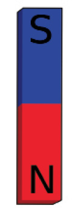 |
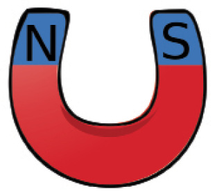 |
|
Figuur 5: Staafmagneet |
Figuur 6: Hoefmagneet |
Staafmagnete is reghoekig, met ’n noordpool aan die een kant van die staaf en ’n suidpool aan die teenoorgestelde kant van die staaf. Dit beteken dat die pole ver van mekaar af is.
Hoefmagnete het ook ’n noord- en ’n suidpool, maar die staaf is gebuig in die vorm van ’n perdehoef. Hierdie buiging bring die noord en die suid pole nader aanmekaar as wat hulle in die geval van ‘n staafmagneet is.
Kom ons ondersoek wat die noord en suid pole van die magneet beteken.
Ondersoek magneetpole
Vir hierdie ondersoek het jy twee staafmagnete nodig, met die noord- en suidpool daarop gemerk. Werk in klein groepe.
1. Hou die staafmagneet in een hand en plaas die ander staafmagneet op jou lessenaar. Bring die noordpool van die magneet in jou hand naby aan die noordpool van die magneet op jou lessenaar. Skryf neer wat gebeur wanneer jy die noordpole van die twee staafmagnete na mekaar toe bring.
Figuur 7
Dit is moeilik om die magnete naby aan mekaar te hou, omdat hulle mekaar
wegstoot. Die twee noord pole weerstaan mekaar.
2. Bring nou die suidpool van die een staafmagneet nader aan die suidpool van die ander staafmagneet. Skryf neer wat gebeur wanneer jy die suidpole van die twee staafmagnete na mekaar toe bring.
Figuur 8
Dit is moeilik om die twee magnete naby aan mekaar te hou omdat hulle mekaar
wegstoot. Die twee suid pole weerstaan mekaar.
3. Bring nou die noordpool van die een staafmagneet nader aan die suidpool van die ander staafmagneet. Skryf neer wat gebeur wanneer jy die noordpool nader aan die suidpool bring.
Figuur 9
Die magnete trek mekaar aan.
Teenoorgestelde pole sal na mekaar
toe trek en aan mekaar vasplak
wanneer hulle raak.

Jy moes agtergekom het dat, soos die noordpole nader aan mekaar gebring is, daar ’n “weerstand” is om te naby te kom. Dit is hoekom jy dit moeilik gevind het om die noord- en suidpole aan mekaar te laat raak. Wanneer jy egter die noordpool nader aan die suidpool bring, trek hulle mekaar aan.
Wanneer die pole dieselfde is, stoot die krag hulle weg van mekaar maar sodra die pole verskil, trek die krag hulle na mekaar toe aan. Dus, ’n noordpool en ’n suidpool trek mekaar aan, terwyl ’n noordpool en ’n noordpool, en ’n suidpool en suidpool, mekaar weerstaan.
Die magnetiese veld om elke magneet het rigting.
|
Ons sê dat die teenoorgestelde pole van ’n magneet mekaar aantrek, terwyl gelyke pole van ’n magneet mekaar wegstoot. |
Visualisering van magnetiese velde (uitbreiding)
Alhoewel ons nie magnetiese velde kan sien nie, kan hulle ontdek word deur gebruik te maak van ystervylsels. Werk in klein groepe om hierdie ondersoek te doen.
Jy het die volgende nodig vir hierdie aktiwiteit:
- • twee staafmagnete,
- • ’n stuk ferm, wit papier, net-net groter as die magnete, en
- • ystervylsels.
Ystervylsels is klein stukkies yster wat lyk soos ’n fyn poeier. Wees versigtig – die vylsels sal aan die magneet vasplak, so jy moet seker maak dat jy ten alle tye die papier tussen die vylsels en die magneet hou.
1. Plaas een van die staafmagnete op die lessenaar voor jou.
2. Plaas die stuk wit papier bo-oor die magneet.
3. Trek liggies die buitelyne van die staafmagneet op die papier en merk die posisies van die noordpool en suidpool.
4. Sprinkel, baie versigtig, die ystervylsels op die papier in die posisie waar die magneet sal wees.
Jy sal sien dat die ystervysels ’n patroon om die magneet maak. Versprei die vylsels versigtig om die magneet sodat jy die hele patroon kan sien. Let op na die plekke waar daar baie ystervylsels, baie naby aanmekaar is, en die plekke waar die ystervylsels meer verspreid is.
5. Gebruik die spasie hieronder om die patroon te teken wat die ystervylsels maak.
|
Leerders moet die algemene patroon wat die vysels maak skets. Hulle tekening behoort die ystervysels naby aanmekaar (ʼn donkerder kleur) naby die pole te wys en dan ligter en meer verspreid oor die lengte van die magneet. Dit behoort ook die algemene kurwe vorm van die magnetiese veld te wys. |
Die ystervylsels wys die patroon van die magnetiese veld. Elke klein stukkie yster tree soos ’n magneet op en beweeg in posisie saam met die magnetiese veld om die staafmagneet.
Indien jy nie die magnetiese veldpatroon self sien nie, kyk na die foto van ystervylsels om ’n staafmagneet:
Figuur 10
Om die magnetiese veld om die magneet te teken gebruik jy lyne om die pad van die ystervylsels voor te stel. Figuur 10 wys hierdie lyne. Hierdie word die magnetiese veldlyne genoem. Die lyne het altyd pyltjies wat die rigting aanwys van die noordpool tot die suidpool.
Figuur 11
|
Let op die volgende inligting omtrent die magnetiese veldlyne in Figuur 11:
|
Herhaal nou die proses deur gebruik te maak van twee staafmagnete waarvan die noord- en suidpole gemerk is. Plaas die noordpool van die een magneet naby aan die suidpool van die ander magneet. Plaas die wit papier bo-oor die magnete en sprinkel die ystervylsels bo-op die papier.
6. Gebruik veldlyne om die patroon wat jy nou sien te teken. Teken die lyne nader aan mekaar waar daar baie ystervylsels is en verder van mekaar waar die ystervylsels minder raak.
|
Die lyne in die tekening moet lyk soos die lyne wat in Figuur 9 geteken is. Indien die leerders se lyne verkeerd is, maak seker dat hulle die magnete korrek geposisioneer het in hulle ondersoek.
|
Lyk jou veldlyne soos die in Figuur 9 waar die magnete mekaar aantrek?
7. Herhaal nou die stappe en plaas nou die noordpool van die een magneet naby die noordpool van die ander magneet. Plaas die papier oor die magnete en sprinkel die ystervylsels bo-oor. Teken die patroon wat jy nou sien.
|
Die lyne in die tekening behoort soos die te wees in Figuur 7 en 8. Indien die leerder se lyne verkeerd geteken is, maak seker dat hulle die
|
Lyk jou veldlyne soos die in Figuur 7 en 8, waar die magnete mekaar wegstoot?

1.3 Watter stowwe sal aan ’n magneet kleef?
Praktiese ondersoek
Vir hierdie ondersoek het jy die volgende nodig:
- • ’n staafmagneet of ’n hoefmagneet,
- • spelde,
- • keramiek, soos ’n beker,
- • ysterspykers,
- • hout,
- • plastiek,
- • koper,
- • papier, en
- • muntstukke.
Jy gaan nou uitvind watter materiale word deur magnete aangetrek en watter materiaal nie.
1. Hou ’n magneet naby elkeen van hierdie voorwerpe, een na die ander. Die materiaal sal óf aangetrek wees tot die magneet, óf nie aangetrek wees tot die magneet nie. Plaas ’n merkie in die kolom wat ooreenstem met dit wat jy sien:
|
Materiaal |
Aangetrek tot die magneet |
Nie aangetrek tot die magneet nie |
|
spelde |
✔ |
|
|
keramiek |
|
✔ |
|
ysterspykers |
✔ |
|
|
hout |
|
✔ |
|
plastiek |
|
✔ |
|
koper |
|
✔ |
|
papier |
|
|
|
muntstukke |
✔ |
|
2. Lys die items wat aan die magneet vasgeplak het.
Spelde, ysterspykers en muntstukke.
3. Wat let jy op omtrent al die items wat aan die magneet vasgeplak het?
Hulle is almal van metaal gemaak. Die leerders moet egter bewus wees dat nie al
die metaal voorwerpe aangetrokke was tot die magneet nie.
4. Is alle metale aangetrek tot magnete?
Nee, koper is ʼn metaal, maar is nie magneties nie.
Het jy gesien dat die materiale wat nie metaal bevat nie, nie aan die magnete vasplak nie? Dit beteken dat die nie-metale nie hoog is in magnetiese stowwe nie. Ons sê dat hulle nie-magneties is.
Het jy gesien dat slegs die metale aan die magnete geplak het? Beteken dit dat alle metale magneties is? Jy gaan hierdie vrae verder ondersoek in die volgende hoofstuk.
Alle stowwe is op die een of ander manier magneties. Daar is egter baie stowwe wat baie flou vorms van magnetisme het sodat daar nie genoeg aantrekking is om hulle na die magneet toe te beweeg nie. Sterk magnetiese voorwerpe sal aan die magneet vasplak.

Volgende week
In die volgende hoofstuk gaan jy leer hoe mense die eienskap van magnetisme in die herwinningsindustrie gebruik.
In Hoofstuk 1 het jy geleer oor magnete en magnetisme. Jy gaan nou ’n ondersoek doen om uit te vind watter metale aangetrek is tot magnete en watter metale nie. Jy gaan ook leer hoekom dit goed is om afvalmetaal te herwin en hoe hierdie belangrike werk gedoen word.
Ons kan ook ander materiale buiten metaal herwin. Plastiek, papier, karton en ander materiale wat gewoonlik weggegooi word, kan eerder herwin word. Aangesien ons natuurlike bronne besig is om al hoe minder te raak, moet ons in plaas daarvan om goed eenvoudig weg te gooi, soveel as wat ons kan, herwin of hergebruik.
Jy gaan begin om ’n herwinningsplan vir jou skool saam te stel deur die afvalprodukte wat deur jou skool geproduseer word, te lys. Jy gaan ook lys hoeveel van hierdie afvalprodukte wel herwin kan word. Baie fabrieke gebruik afvalprodukte, dus kan jy ’n plan ontwerp om fondse vir jou skool in te samel deur afvalprodukte te herwin.
2.1 Magnetiese en nie-magnetiese materiaal 18
2.2 Gevallestudie: Herwinning van afvalmetale 21
2.3 Herwinningsplan vir jou skool 25
Figuur 1: Metale wat in die huis gebruik word
Figuur 2
2.1 Magnetiese en nie-magnetiese materiale
In hoofstuk 1 het jy oor magnetisme en magnete geleer. Jy het ook geleer dat nie-metale nie aan magnete vasplak nie, terwyl ander metale wel aan magnete vasplak. Ons sê dat hierdie metale magneties is.
Kyk na die voorwerpe wat van verskillende metale gemaak is, in figuur 4:
|
Staal elektrisiteit krag torings |
Gietyster stoof |
Loodsoldering
Koperband |
|
Geelkoper trompet. Geelkoper is ’n mengsel van koper en sink. |
Silver trompet |
Goue oorbelle |
|
Nikkel hangkas toebehore |
Staalkabel |
Brons pot. Brons is ’n koper gemeng met tin. |
|
|
Blikkan |
Aluminium rekenaaronderdele |
Figuur 4: Verskillende soorte metaal
1. Watter van hierdie voorwerpe is gemaak van magnetiese materiaal? Vul die tabel hieronder in:
|
Materiaal |
Is die materiaal magneties? |
|
|
Ja |
Nee |
|
|
Staal kragtoring |
✔ |
|
|
Gietyster pot |
✔ |
|
|
Silver trompet |
|
✔ |
|
Koperband |
|
✔ |
|
Geelkoper trompet |
|
✔ |
|
Lood soldering |
|
✔ |
|
Goue oorbelle |
|
✔ |
|
Nikkel toebehore |
✔ |
|
|
Staalkabel |
✔ |
|
|
Aluminium rekenaaronderdele |
✔ |
|
|
Brons pot |
|
✔ |
|
Blikkan |
|
✔ |
|
Sleutels |
|
✔ |
Hoeveel van die metale is magneties? Indien jy gesê het slegs 3, dan is jy korrek. Die metale is staal, yster en nikkel en elkeen van hulle bevat yster en is magneties. Enige metaal wat yster bevat en wat magneties is, word ysterhoudende metaal genoem.
Alhoewel baie mense dink dat blik magneties is, is dit nie ’n ysterhoudende metaal nie. Die blikke waarin voedsel en ander huishoudelike produkte kom, word eintlik van ’n baie dun staal gemaak wat met nog ’n dun lagie blik bedek word om te keer dat die blik deur roes.
Ysterhoudende metale is metale wat yster bevat.
Staal is ’n mengsel van yster en koolstof. Wanneer jy ’n magneet langs ’n blikkan plaas, trek die magneet die yster aan en nie die blik nie.
Sodra ’n metaal in kontak kom met suurstof, vorm dit oor ’n tydperk roes op die staal.
Roes is ook magneties.
Blik en sink roes nie en daarom gebruik ons dit om yster en staal te beskerm.
’n Mens sien gereeld yster wat geroes het. Dit word korrosie genoem. Geroeste yster is steeds magneties.
Figuur 5: Die lagie sink op hierdie daksinkplaat het al verweer.
Ondersoek: toets watter metale magneties is
Algemene metaal voorwerpe.
Daar is in jou daaglikse lewe baie bruikbare metaal voorwerpe om jou. Party is baie groot, soos motors en busse; party is baie klein, soos skuifspelde.
1. In die eerste kolom, maak ’n lys van 15 metaal items wat jy gereeld gebruik of om jou sien.
2. In die tweede kolom moet jy skryf van watter metaal elke voorwerp gemaak is. Indien ’n voorwerp uit meer as een metaal bestaan, skryf dan die metaal neer wat die grootste deel van die voorwerp beslaan. Byvoorbeeld: motors word meestal van staal gemaak.
3. Toets die items om te sien of hulle magneties is of nie. Skryf jou resultate in die laaste kolom neer.
Figuur 6: Dinge wat jy in jou huis kan vind: ’n vurk, ’n sif, naalde en spykers.
|
Voorwerp |
Metaal |
Magneties: Ja/Nee |
|
Skuifspelde |
Staal |
Ja |
|
Naalde en spelde |
Staal |
Ja |
|
Messegoed |
Staal of nikkel |
Ja |
|
Huishoudelike toestelle |
Staal |
Ja |
|
Spykers |
Staal of yster |
Ja |
|
Skroewe |
Geelkoper |
Nee |
|
Sleutelhouer |
Aluminium |
Nee |
|
Voertuig (motor of bus) |
Staal of yster |
Nee |

2.2 Gevallestudie: Herwinning van afvalmetale
Is jy verras dat soveel dinge wat ons daagliks gebruik van metaal gemaak is? Ons gebruik verskillende metale om ons te help met meeste van die dinge wat ons doen. Dit beteken dat fabrieke ’n konstante voorraad metaal benodig om al hierdie items te kan vervaardig. Ons gebruik jaarliks miljoene ton staal, aluminium en ander metale, maar die aarde se voorraad van metaal sal op een of ander stadium opraak. Kan jy dink watter probleme dit sal veroorsaak?
Herwinning is om iets oor en oor te gebruik. Dit kan dalk in ’n ander vorm voorkom, maar ons gebruik die basiese materiale oor en oor.
Die oplossing is om afvalmetale te herwin. Alles wat van metaal gemaak is, kan opgebreek en in hulle basiese dele sorteer word en dan weer gebruik word. Dit sal die land help om miljoene rand te spaar en sal natuurlik ook keer om al die planeet se bronne op te gebruik.
Metaal is ideaal vir herwinning omdat dit gesmelt en hergebruik kan word sonder dat dit sy sterkte verloor.
Figuur 7: Herwinde staalbale
Die versameling van afvalmetale
Die proses om afvalmetaal te versamel,
begin wanneer mense leer om nie metaalvoorwerpe weg te gooi nie. Alles wat van metaal gemaak word, kan herwin word en almal moet seker maak dat voorwerpe wat herwin kan word, nie weggegooi word nie.
Wanneer jy tuis is, maak seker dat alle klein metaal voorwerpe, soos leë blikkies, apart versamel word en na herwinningsentrums gestuur word. Groter voorwerpe soos huishoudelike toestelle sal deur die afvalmetaalhandelaars opgelaai word.
Afvalmetaalhandelaars sorteer die verskillende tipes metale wat hulle versamel in hope en stuur dit dan na fabrieke. Die fabrieke smelt die metaal voorwerpe sodat die metaal weer gebruik kan word.
Figuur 8: Die internasionale herwinningssimbool. Wanneer jy hierdie simbool sien, beteken dit dat die materiale wat gebruik is vir hierdie produk, herwin kan word.
Figuur 9: Skrootysterwerwe gebruik magnete om die hope afvalmetaal te sorteer.
Sien jy hoe ’n magneet gebruik kan word om hope metaal te sorteer? Skrootysterhandelaars gebruik groot magnete om die magnetiese metale van die hope te verwyder, wat die hele proses van sortering bespoedig.
Maak geld deur herwinning
Om mense te oortuig om nie waardevolle materiale wat herwin kan word te mors nie, kan skrootwerfhandelaars betaal vir die afvalmetaal. Hulle betaal gewoonlik per massa, so dit maak nie regtig saak in watter vorm of toestand die metaal is nie. Dit is die massa wat belangrik is.
Dit kan egter ook probleme veroorsaak. Sommige mense steel metaal voorwerpe soos werkgatdeksels en koper draad van telefoon- en elektrisiteitskabels om te probeer geld maak. Om hierdie voorwerpe te steel is nie alleenlik oneerlik nie, maar dit kan ook ander mense in gevaar stel. Indien werkgatdeksels gesteel word, los dit gate in die pad en mense kan met hulle motors daarin ry of daarin val; en gesteelde elektrisiteitskabels kan die verlies van krag veroorsaak.
Versamel afvalmetaal op ‘n eerlike wyse
1. Dink jy dat daar metaal items is wat nie deur die skrootwerfhandelaars aanvaar moet word nie? Bespreek jou idees met ’n ander leerder. Skryf die items neer wat jy dink nie deur skrootwerfhandelaars behoort gekoop te word nie.
Daar is baie voorwerpe wat skrootwerfhandelaars nie moet koop nie. Enige items
wat gesteel is, en enige metaal wat van ʼn publieke plek geneem is, byvoorbeeld,
koper draad van elektrisiteit en telefoon lyne, yster van werkgatdeksels in
paaie, of aluminium van brugrelings.
2. Lys ’n paar afvalmetaal voorwerpe wat mense kan versamel om aan skrootwerfhandelaars te verkoop.
Enige metaal wat weggegooi is deur individue, besighede, of die regering:
koeldrank blikkies, vir aluminium; voertuigonderdele van voertuie wat geskrap
is, vir yster en staal; bedrading en ander dele van huishoudelike toebehore wat
stukkend is, vir koper, staal en aluminium.
3. Indien jy afvalmetaal versamel om aan ’n skrootwerfhandelaar te verkoop, hoe sal jy bewys dat jy die items wettig verkry het? Hier is ’n voorbeeld: “Ek sal die eienaar van die huis vra om vir my ’n brief te gee wat sê dat hulle die items aan my gegee het.” Skryf enige ander stappe neer wat jy dalk kan neem.
Die leerders moet ʼn begrip toon dat metaal wat herwin word van ʼn
oorspronklike bron afkom, of dat dit van ʼn area kom waar afval versamel is.
Hulle kan die skrootwerfhandelaar presies vertel waar en hoe hulle die metale
verkry het om hierdie vraag te beantwoord.

Identifiseer herwinbare materiale
Afvalmetaal is nie die enigste materiaal wat herwin kan word nie. Die meeste afval kan herwin word. Daar is maatskappye wat spesialiseer in die versameling van alle vorme van afval wat die gemeenskap op baie manier dien.
In die laaste deel van hierdie hoofstuk gaan jy ondersoek wat ’n herwinningsprogram vir jou skool kan beteken. Voor jy begin om materiale te versamel, hou ’n bespreking in die klas oor watter afvalmateriale wat herwin kan word deur die skool produseer word. Onthou dat dit nie net in jou klaskamer is nie, maar in die hele skool.
Vra een leerder om hierdie items op die bord te skryf met ’n paar voorbeelde van die materiale wat jy heel moontlik by die skool sal vind.
Byvoorbeeld:
Plastiek: melkbottels, koeldrankbottels.
Karton: kartonhouers, kartonbokse.
Hoeveel herwinbare afvalprodukte word deur die skool produseer?
- • Vir die volgende week, hou ’n rekord van die hoeveelheid afval wat die skool produseer.
- • Dit sal help indien die res van die skool weet dat jy herwinbare afval versamel. Vra jou skoolhoof of jy ’n spesiale afvaldrom, of klein area, kan kry waar leerders hulle herwinbare afval kan plaas. Indien jou skool ekstra asdromme het, kan jy hulle langs die normale asdromme plaas en herwinningsimbole op hulle plak.
Veiligheid
Wanneer jy afvalmateriaal versamel, dra altyd handskoene. Was jou hande deeglik nadat jy die materiaal sorteer het.
- • Versamel die herwinbare materiale en sorteer dit in hopies. Plaas die herwinbare materiaal in swart sakke. Knoop die sakke mooi toe en merk elkeen duidelik. Vra jou onderwyser waar jy die materiaal kan stoor terwyl jy dit versamel.
- • Vind uit of daar skrootwerfhandelaars naby jou of jou skool is en vra hulle hoeveel hulle sal betaal vir die verskeie tipes materiale.
2.3 Herwinningsplan vir jou skool
Maak geld deur herwinning
Jy het vir die laaste week herwinbare afval versamel en gestoor. Doen nou die volgende oefeninge as ’n klas:
- • Kry al die afval wat jy versamel het bymekaar en maak seker dat dit korrek sorteer is: een hoop vir papier, een hoop vir karton, en een hoop vir plastiek.
- • Plaas die hopies in sakke en merk hulle deeglik volgens dit wat in elke sak is.
- • Weeg die verskillende tipes materiaal. Werk die totale gewig van elke materiaal wat jy het, uit.
- • Vermenigvuldig die gewig van die materiaal met die waarde wat die skrootwerfhandelaar gesê het hul sou betaal vir die materiaal.
Byvoorbeeld:
3 kg aluminium blikke teen R3,50 per kg: R3,50 × 3 = R10,50 - • Wat is die somtotaal van al die materiale saam.
- • Bespreek maniere waarop jy die herwinningsisteem kan verbeter.
- • Bespreek maniere om seker te maak dat die hele skool betrokke is en belangstel in hierdie projek.
Skryf ’n individuele verslag oor die waarde wat herwinning vir jou skool inhou
Jy het as ’n klas gewerk om te sien hoeveel herwinbare materiaal in ’n week by jou skool versamel kan word, en ook hoeveel geld gemaak kan word vir skoolprojekte. Elkeen van julle moet nou ’n verslag skryf oor die proses.
Jy moet die volgende onderwerpe insluit:
1. Watter materiale kan die skool herwin?
2. Hoeveel van elke materiaal kan gemiddeld per week versamel word?
3. Wie sal die afval elke dag versamel?
4. Waar sal jy die afvalmateriaal veilig en higiënies kan stoor?
5. Watter skrootwerfhandelaar of herwinningsbesigheid sal die materiaal oplaai, en hoeveel sal hulle daarvoor betaal?
6. Behoort jy ekstra materiaal van jou huis of ander versamelpunte bring om by die skool se afval te voeg om meer geld te maak?
7. Behoort jy die hele skool betrokke te maak by die projek?
8. Skryf nuwe idees neer oor hoe die proses van herwinning meer effektief gemaak kan word om ekstra geld te maak.
In hierdie vraag moet die leerders fokus op die effektiwiteit, uitbreiding en
behoud van die herwinningsprojek. Die addisionele punte wat hulle moet noem
moet idees insluit van hoe hulle die groot aantal afvalmateriaal gaan versamel en
verder daarmee werk. Hulle moet idees voorstel oor hoe hulle opgewondenheid
en entoesiasme gaan skep deur ander mense en klasse te vertel oor wat
herwinning kan bereik. Die planne moet idees gee oor hoe groter aantal herwinde
materiaal versamel en gestoor kan word. Dit moet ook planne insluit oor hoe
die projek deurlopend gaan plaasvind: wie gaan die vordering monitor, wie gaan
ander mense onderrig, en wie gaan maniere ondersoek om die versameling te
vermeerder. Dit moet ook idees insluit oor hoe die geld wat sodoende ingesamel
word gebruik kan word tot voordeel van die skool. Dit sal die leerders motiveer
en aanmoedig om hard te werk aan die projek.
Volgende week
In die volgende les gaan jy leer oor eenvoudige elektriese stroombane, hoe om stroombaan diagramme te teken, en hoe om ’n elektromagneet te maak.
In hierdie hoofstuk gaan jy leer wat ’n elektriese stroombaan is en hoe om al die dele van ’n elektriese stroombaan te verbind. Jy gaan ook leer hoe om stroombaan diagramme te teken. Jy gaan leer hoe elektromagnete werk en hoe om ’n eenvoudige elektromagneet te maak.
3.1 Stroombane en komponente 28
3.2 Bou jou eie elektriese stroombaan 30
3.3 Elektromagnete 32
Figuur 1: ’n Gloeilamp kan deel van ’n elektriese stroombaan wees. Die filament in die gloeilamp vorm deel van die stroombaan.
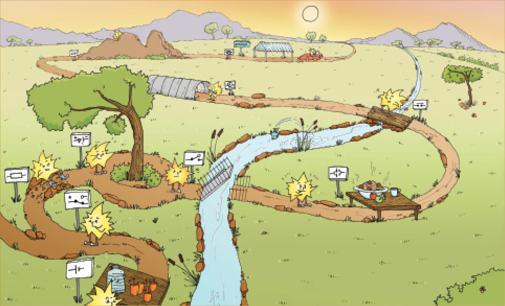
3.1 Stroombane en komponente
’n Elektriese stroombaan het drie basiese dinge nodig om te werk:
1. ’n Energiebron. Dit kan ’n sel wees of ’n sterker kragbron.
2. ’n Volledige stroombaan. Daar moet ’n ongebroke verbinding van geleidende materiaal wees waardeur die elektriese stroom kan vloei.
3. ’n Lading. Daar moet ’n mate van weerstand in die stroombaan wees. Dit kan in die vorm van ’n gloeilamp, resistor, ’n motor of ander elektriese komponente wees.
Om te wys hoe ’n elektriese stroombaan verbind moet wees, teken ons stroombaan diagramme met simbole wat elke komponent wys. Dit is ’n eenvoudige manier om die elektriese stroombaan voor te stel. Die tabel wys die simbool wat ons gebruik vir elke komponent:
’n Komponent is een deel van ’n hele sisteem.
|
Naam |
Prent |
Simbool |
|
elektrochemiese sel of sel
|
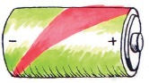 |
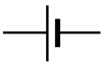 |
|
batterye in series, beteken dat hulle langs mekaar is |
|
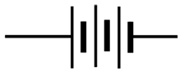 |
|
skakelaar |
|
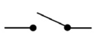 |
|
gloeilamp |
|
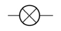 |
|
resistor
|
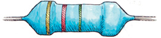 |
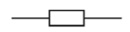 |
|
gonser |
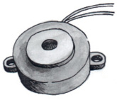 |
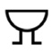 |
|
Naam |
Prent |
Simbool |
|
geleidingsdrade
|
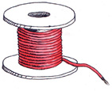 |
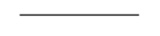
|
Die volgende is ’n voorbeeld van ’n eenvoudige elektriese stroombaan. Die stroombaan bestaan uit ’n sel, ’n skakelaar, en ’n gloeilamp wat aanmekaar verbind is deur ’n geïsoleerde koper geleidingsdraad.
Stroombaan diagramme word as reghoekige bokse geteken, al lyk die ware stroombaan heel anders.
Figuur 3
Vrae om te beantwoord
1. Wat is die drie dinge wat jy nodig het om ’n elektriese stroombaan te maak?
ʼn Energiebron, ʼn volledige stroombaan en ʼn lading.
2. Hoe dink jy sal jy kan sien of die stroombaan wat in die prent hierbo gewys is, werk?
Die gloeilamp sal aangaan.
3. Indien jy ’n fout maak wanneer jy die stroombaan aanmekaar sit en die konneksies is nie volledig nie, wat dink jy sou gebeur?
Die gloeilamp sal nie aangaan nie.

3.2 Bou jou eie elektriese stroombaan
Bou eenvoudige stroombane
Vir hierdie praktiese oefening het jy die volgende voorwerpe nodig:
- • verskeie 1,5 V selle of een 9 V sel,
- • geïsoleerde koper draad,
- • ’n skakelaar, en
- • ’n gloeilamp.
1. Verdeel in groepe van drie of vier.
2. Verbind die komponente soos
aangedui in die diagram in figuur 4.
Figuur 4
(a) Gaan die gloeilamp aan?
Nee, die gloeilamp gaan nie aan nie.
(b) Hoekom gaan die gloeilamp nie aan nie?
Die stroombaan is nie volledig nie; die draad raak nie aan die gloeilamp nie.
3. Kyk nou na hierdie stroombaan:
(a) Gaan die gloeilamp aan?
Ja, die gloeilamp gaan aan.
(b) Hoekom gaan die gloeilamp aan?
Figuur 5
Die stroombaan is voltooid; daar
is ʼn kragbron en daar is ʼn
lading (gloeilamp).
4. Teken jou stroombaan diagram om te wys hoe jy jou komponente aanmekaar verbind het in jou stroombaan. Onthou om ’n liniaal te gebruik.
|
|
5. Watter een van jou komponente is die energiebron?
Die sel is die energiebron.
6. Watter een van jou komponente is die lading?
Die gloeilamp is die lading.

3.3 Elektromagnete
Ons gaan nou na ’n baie interessante verskynsel kyk, naamlik die verhouding tussen elektrisiteit en magnetisme.
Elektromagnete is magnete wat geskep word deur die gebruik van elektrisiteit. Hulle is nie permanente magnete nie. Hulle is slegs magnete wanneer elektrisiteit deur hulle vloei. Sodra die elektrisiteit afgeskakel word, verloor die elektromagneet sy magnetisme.
Elektromagnete is baie bruikbaar vir die skeiding van afvalmateriaal. Afvalmateriaal in afvalhope is gewoonlik ’n mengsel van metale en nie-metale. Die ysterhoudende metale, metale wat yster bevat, is steeds waardevol. Dit neem ’n lang tyd om afvalmateriaal met die hand te sorteer.
Soos wat jy verlede week geleer het, word ysterhoudende metale aangetrek tot magnete. ’n Elektromagneet word deur die afvalmateriaal getrek en al die ysterhoudende metale plak daaraan vas. Die elektromagneet word dan oor ’n afvalbak beweeg waar die elektromagneet afgeskakel word. Die ysterhoudende metale is dan nie meer aangetrek tot die magneet nie en val in die afvalbak in.
Figuur 6: ’n Elektromagneet word gebruik om metale in ’n skrootwerf te sorteer.
Elektromagnete word nie alleenlik gebruik om afvalmetaal te sorteer nie, maar word gereeld gebruik as komponente van ander elektriese toestelle. Sommige voorbeelde sluit in:
- • in motors: om die motor te laat roteer,
- • in luidsprekers: ’n elektromagneet reageer op die klankseine en versterk die klank,
- • in rekenaar hardeskywe: elektromagnetisme word gebruik om data te skryf en te stoor,
- • in elektriese klokke: elektromagnete
trek die hamer van die klok aan en laat dit weer los, en - • in ’n magnetiese deurskakelaar: elektromagnete word ook gebruik in
toestelle wat deure oop en toe laat gaan.
In al hierdie toestelle word die magnetiese krag beheer deur die aan- en af skakel van die elektriese stroombaan, en hierdie is die eienskap wat elektromagnete so bruikbaar maak.
Laat ons nou kyk na ’n eenvoudige elektromagneet in die klaskamer. Jou onderwyser kan hierdie eksperiment as ’n demonstrasie doen.
Maak ‘n eenvoudige elektromagneet
Vir hierdie aktiwiteit gaan jy die volgende voorwerpe benodig:
- • ’n Lang ysterspyker, omtrent 15cm lank. Indien jy nie ’n lang spyker het nie, kan jy ’n bondel maak van ’n aantal stukke ysterdraad,
- • 3 m geïsoleerde koperdraad,
- • ’n D-sel sel,
- • ’n draadstroper, en
- • metaal skuifspelde.
1. Gebruik die draadstroper om die klein stukkie isolasie van beide kante van die geïsoleerde koperdraad af te haal.
2. Draai die geïsoleerde draad netjies om die ysterspyker. Maak seker dat jy die draad in dieselfde rigting bly draai. Hou die spirale na aan mekaar.
Figuur 7: ’n Eenvoudige elektromagneet
3. Draai nou een van die gestroopte punte van die draad om die positiewe pool van die sel.
4. Draai die ander gestroopte punt om die negatiewe pool van die sel.
5. Om te toets of jou elektromagneet werk, kyk of dit die skuifspelde optel. Indien die skuifspelde vasplak aan die ysterstaaf, dan beteken dit dat jou elektromagneet werk!
Veiligheid:
Die ysterspyker kan redelik warm word, so wees versigtig om nie jou hande te brand nie!
Daar is geen spesifieke antwoord nie. Die leerders kan slegs neerpen of die
elektromagneet werk of nie.
6. Sodra jy die elektromagneet getoets het, haal een van die drade van een van die pole van die sel af. Probeer nou om die skuifspelde op te tel. Word die skuifspelde aangetrek tot die ysterstaaf?
Indien die magneet werk, sal die skuifspelde aan die ysterstaaf kleef.
7. Hoe kan jy die elektromagneet gebruik om die skuifspelde van een punt op te tel en dan op ’n ander plek neer te sit?
Die magneet kan aan- en afgeskakel word deur die verbinding en ontkoppeling
van een van die sel pole.

Hoe werk ’n elektromagneet?
Daar is ’n sterk verhouding tussen elektrisiteit en magnetisme. Die elektrisiteit in die draadspirale skep ’n magnetiese veld. Die ysterspyker is reg in die middel van hierdie magnetiese veld. Omdat die ysterspyker ’n ysterhoudende materiaal is, word dit deur die veld gemagnetiseer. Die magnetiese veld van die elektriese stroombaan word groter of sterker gemaak deur die magnetiese veld in die ysterspyker. Sonder die ysterkern sal die magnetiese veld baie swak wees. Wanneer die elektriese stroom afgeskakel word, verloor die ysterspyker sy magnetisme.
Volgende week
Volgende week gaan jy meganiese sisteme en raamstrukture hersien as voorbereiding vir volgende kwartaal se mini-PAT.
In hierdie hoofstuk gaan jy leer hoe eenvoudige meganismes gekombineer kan word om komplekse, nuttige masjinerie te maak. Jy gaan leer van ’n meganisme wat ’n katrol genoem word, wat gewoonlik deel is van ’n hyskraan. Daarna gaan jy leer hoe ’n katrol en ’n krukarm gekombineer kan word om ’n tou of kabel mee op te wen.
4.1 Masjiene kombineer eenvoudige meganismes 38
4.2 Katrolle – meganiese voordeel met behulp van toue en kabels 41
4.3 Kombineer meganismes 44
Figuur 1: Hyskrane gebruik katrolle en hefbome.
4.1 Masjiene kombineer eenvoudige meganismes
Kan jy nog onthou wat ’n meganisme is? Meganismes is die dele waaruit masjiene saamgestel word. Masjiene word gewoonlik saamgestel deur eenvoudige meganismes wat aan mekaar verbind is.
Hoekom is masjiene nuttig? Hulle help ons om dinge verder, vinniger en makliker te beweeg. Ons kan eenvoudige meganismes aanmekaar sit om ’n masjien te ontwerp wat aan ons ’n meganiese voordeel gaan gee.
Onthou:
|
|
Figuur 3 op die oorkantste bladsy wys ’n “toringhyskraan”. Hierdie hyskrane word gebruik om ons te help om hoë geboue te bou.
Toringhyskrane is lang, regop hyskrane wat toue, katrolle en wenasse gebruik om werkers te help om swaar goed soos bakstene en sement te lig. Hulle word gemaak van eenvoudige meganismes wat saamwerk.
Gebruik die prent van die toringhyskraan op die teenoorgestelde bladsy en beantwoord die vrae.
1. Wat dink jy is die hoofdoel van die hyskraan?
Die hoof doel van die hyskraan is om voorwerpe wat te swaar is om deur mense
opgelig te word, op te lig en dan hierdie voorwerpe na ander plekke of na ’n
ander vlak te beweeg.
2. Wat doen die katrolle?
Die katrolle maak dit moontlik vir die kabels wat swaar voorwerpe trek om die
rigting te verander waarin hulle trek. [Nota aan die onderwyser: Wanneer katrolle
in sekere kombinasies gebruik word, kan die sisteem van katrolle wat so gevorm
word, ’n meganiese voordeel gee. Leerders gaan later in die hoofstuk hieromtrent leer.]
Figuur 3: ’n Toringhyskraan gebruik baie verskillende meganismes.
3. Die hyskraan moet swaar voorwerpe van verskeie plekke op die grond oplig. Hoe help die trollie om voorwerpe van verskillende plekke op die grond op te lig?
Die trollie beweeg met die hyskraanbalk langs en kan so die hak reg bo die laste
posisioneer.
4. Hoekom het die hyskraan nodig om te roteer?
Roteer beteken om rondom die as of die middelpunt te draai.
Die hyskraan moet kan roteer sodat dit laste op
verskillende plekke kan bykom, hulle dan oplig en neer te plaas waar hulle benodig word.
5. Die hyskraanbalk het ’n steunpunt bo-op die vertikale kolom, ’n insetkrag van die skuins kabels heel bo-op die hyskraan wat die hyskraanbalk op trek, en ’n las wat die hyskraanbalk aftrek. Hoe weet jy dat die hyskraanbalk eintlik ’n hefboom is?
Dit het ’n steunpunt, en ’n insetkrag word daarop toegepas om ’n las te beweeg.
6. Is die hyskraanbalk ’n “klas 1-hefboom”, “klas 2-hefboom”, of ’n “klas 3-hefboom”? En gee dit ’n meganiese voordeel? Hoe weet jy dit?
Dit kan as ’n klas 2-hefboom of ’n klas 3-hefboom gebruik word, afhangende van
hoe ver die trollie van die steunpunt op die vertikale kolom is. Beide die las en
insetkrag is aan dieselfde kant van die steunpunt.
Wanneer die trollie naby aan die steunpunt is, is die las nader aan die steunpunt
as aan die kabels wat die hyskraanbalk na bo trek (die insetkkrag), dus die
hyskraanbalk word dan as ’n klas 2-hefboom gebruik. Die hyskraanbalk gee ’n
meganiese voordeel omdat ’n groot beweging deur die insetkrag nodig is om ’n klein beweging op die las te veroorsaak.
Wanneer die trollie baie ver weg van die steunpunt is, is die las verder van die
steunpunt as wat die insetkrag is, dus die hyskraanbalk word as ’n n klas 3-
hefboom gebruik. Die hyskraanbalk gee dan nie ’n meganiese voordeel nie, maar
’n afstandvoordeel, omdat ’n klein beweging deur die insetkrag nodig is om ’n
groot beweging op die las te veroorsaak.
[Nota aan die onderwyser: Die hyskraanbalk roteer nie werklik om die steunpunt
nie, maar bly horisontaal. Maar dit is nuttig om te dink aan wat sou gebeur indien
dit sou roteer, omdat mens makliker sal verstaan of dit ’n meganiese voordeel of
’n afstandvoordeel gee.]
7. Wat verhoed dat die hyskraan sal omval wanneer dit iets oplig?
Dit word aan die teenoorgestelde kante gebalanseer deur die gewig van betonblokke.
8. Maak ’n lys van al die meganismes op hierdie hyskraan wat help om laste te lig.
katrolle en hefbome.
9. Maak nou ’n lys van al die dele wat die hyskraan regop hou terwyl dit swaar voorwerpe oplig.
die swaar basis; die toring; die hyskraanbalk wat gebalanseer word deur die
beton gewigte; kabels wat die beton gewigte en die hyskraanbalk ondersteun.
4.2 Katrolle – meganiese voordeel met behulp van toue en
kabels
Kyk na figuur 4. ’n Man lig ’n swaar sak op. Hy gebruik ’n tou wat om ’n katrol gebind is om die sak opwaarts te trek deur self afwaarts te trek aan die tou. Die katrol maak dit moontlik om die rigting waarin die tou getrek word, te verander. Wanneer die man die tou afwaarts trek, kan hy met sy gewig op die tou leun om die swaar sak makliker op te lig. Maar daar is geen meganiese voordeel in hierdie situasie nie.
Kyk na figuur 5. ’n Persoon gebruik twee katrolle om ’n gewig te lig. Een katrol is aan die dak vasgemaak. Die tweede katrol hang aan ’n lus van die tou. Die twee katrolle, en die manier waarop die tou om beide van hulle gebind is, word ’n katrolstelsel genoem. Die katrolstelsel maak dit makliker om ’n las te lig. Die stappe hieronder verduidelik hoe dit werk:
- • Aan die een kant trek jy aan een stuk van die tou.
Dit is die insetkrag. - • Twee stukke tou lig die las.
- • Twee katrolle wat aan een enkele stuk tou verbind is, soos in figuur 5, gee ’n meganiese voordeel.
Figuur 5: Indien jy twee katrolle aan ’n stuk tou verbind, soos op die manier wat hierbo aangetoon word hier, kry jy ’n meganiese voordeel.
Maak jou eie katrolstelsel
Jy het die volgende nodig vir hierdie aktiwiteit:
- • twee plastiek gordynringetjies
om as katrolle te dien, - • 500 mm tou of garing,
- • paar gewigte, soos staal moere
of wassers, - • ’n plat stuk geriffelde karton,
omtrent A4 grootte, - • skuifspelde, en
- • drie spelde.
Figuur 6: Jy kan ‘n katrolstelsel uit gordynringetjies maak.
Bestudeer die prent in figuur 6 om jou
te help om jou eie katrolstelsel
te maak. Die instruksies is hieronder.
Maak jou eie katrolstelsel
- • Gebruik ’n speld om een
gordynringetjie omtrent 30 cm van
die boonste deel van die geriffelde
karton aan te heg. Dit sal die vaste
katrol wees. - • Maak ’n haak van die derde skuifspeld en haak dit deur die gat van die ander gordynringetjie. Dit sal die bewegende katrol wees.
- • Gebruik ’n speld om die een end van die garing of tou aan die karton vas te maak, iewers naby aan die vaste katrol.
- • Ryg die garing of tou om die bewegende katrol, en dan weer op en bo-oor die vaste katrol.
- • Maak die las aan die haak onder vas.
- • Hang of leun die kartonbord teen ’n muur.
1. Trek die tou afwaarts. Wat gebeur met die las?
Die las beweeg op.
2. Hoeveel dele van die tou trek die las op aan die uitsetkant van die stelsel?
twee dele van die tou.
3. Hoeveel dele van die tou word afgetrek aan die insetkant van die stelsel?
een deel van die tou.
4. Trek die punt van die tou by die insetkant 100 mm af. Meet dan hoe ver die las opgelig word. Skryf jou antwoord neer.
50 mm
5. Probeer nou die las lig sonder die katrolstelsel. Hoe vergelyk dit met wanneer jy die las met die katrolstelsel lig? Maak die katrolstelsel dit makliker?
Dit is twee keer moeiliker om die las sonder die katrolstelsel te lig.

‘n Nóg makliker katrolstelsel
Doen hierdie aktiwiteit as huiswerk sodat jy kan seker maak dat jy katrolstelsels volledig verstaan. Voeg nog twee gordynringetjies by jou katrolstelsel. Kyk na die prent hieronder om jou te help. Toets die stelsel deur dieselfde las as voorheen te lig.
Figuur 7: Jy sal die meganiese voordeel vermeerder as jy meer katrolle gebruik. Daar sal meer tou lengtes wees om die las mee te lig.
1. Met watter afstand word
die las gelig wanneer jy die
tou met 100 cm af trek?
25 mm
2. Beskryf wat ’n katrolstelsel
doen.
’n Katrolstelsel verander
die rigting van die trekkrag
wat nodig is om ’n las te lig,
en maak dit só makliker om
aan die tou te trek. Dit gee ook ’n meganiese voordeel wat dit makliker maak om
die las te lig, soos wat ’n ratstelsel ook kan doen.
3. Waarvoor dink jy word katrolstelsels meestal gebruik?
Katrolstelsels word meestal gebruik om voorwerpe op te lig, of om swaar
voorwerpe by skuinstes op te trek.
4. Ware katrolstelsels gebruik wiele in plaas van gordynringetjies. Hoekom dink jy is dit so? Wenk: Dink hoe jy dit makliker kan maak om ’n voorwerp oor ’n growwe oppervlak te trek.
Daar is baie minder wrywing op die tou wanneer ’n wiel gebruik word, en dit
vereis daarom minder moeite om die las te lig.

4.3 Kombineer meganismes
Maak ‘n hys-stelsel
In hierdie aktiwiteit gaan jy meganismes kombineer om ’n masjien te maak wat dinge kan oplig. Onthou dat masjiene dit makliker vir ons maak om voorwerpe te beweeg, te lig, te stoot of te trek.
Kyk na die model van die hys-stelsel in figuur 8. Jy gaan in die aktiwiteite wat volg kans kry om hierdie hys-stelsel te maak. Beantwoord eers die vrae hieronder.
Figuur 8: ’n Hys-stelsel wat jy kan maak
1. Hoe help die katrolstelsel om voorwerpe te lig?
Dit verander die rigting waarin die tou getrek moet word aan die insetkant.
Dit gee ’n meganiese voordeel.
2. Wat doen die hefboom op hierdie stelsel?
Dit gee ’n meganiese voordeel.
3. Verduidelik hoe jy die stelsel kan gebruik om ’n las te lig?
Die katrolstelsel word deur die wenas gedryf. Die tou gaan oor die hys-hefboom,
wat in die proses help om die las te lig.

Maak ‘n A-raam vir ‘n steunpunt
Trek die vorms in figuur 9 na. Sny hulle dan uit en plak hulle op ’n stuk geriffelde karton. Sny die karton vorms uit.
Figuur 9: Gebruik hierdie vier vorms om ’n A-raam te maak.
- • Gebruik die vorms om twee A-rame te maak.
- • Gom twee vorms aan die bokant vas.
- • Voeg kleefband aan die onderkant om die A-raam te maak.
Kyk na figuur 10 om te sien hoe om dit te doen.
Figuur 10: Hoe om ’n A-raam te maak.

Maak ‘n handgedrewe wenas
’n Wenas bestaan uit ’n kombinasie van:
- • ’n wenas-drom wat ’n silinder is waarom tou of kabel opgerol is,
- • ’n as wat toelaat dat die drom kan roteer, en
- • ’n krukarm wat ’n hefboom is om die drom mee te draai.
Jy benodig die volgende vir hierdie aktiwiteit:
- • twee melkbottelproppies,
- • kleefband,
- • ’n lang spyker,
- • stewige karton, 15 mm wyd en 40 mm lank, en
- • ’n klein spyker.
Figuur 11: Jy kan ’n handgedrewe wenas maak deur twee
melkbottelproppies saam te bind of te gom.
- • Plak die melkbottelproppies teen mekaar.
- • Maak twee klein gaatjies in die middel van elke
proppie. Jou wenas se as gaan deur hierdie gate
gaan. - • Sny ’n stuk stewige karton vir jou krukarm. Dit
moet omtrent 15 mm wyd en 40 mm lank wees. - • Druk die lang spyker deur die een kant van die krukarm. Druk dan die spyker deur die middel van die drom, en uit deur die anderkant van die drom.
Neem kennis: Die krukarm en die drom moet styf op die spyker pas. Wanneer die krukarm draai, moet die drom ook draai.
- • Maak ’n handvatsel vir die krukarm deur ’n klein spyker deur die ander kant van die krukarm te druk.
Heg die wenas aan die A-raam
- • Maak ‘n gat in elke A-raam op dieselfde plek, in die een “been” van die A-raam, omtrent 45 mm van die grond af.
Figuur 12: Plaas jou handgedrewe wenas op jou A-raam.
- • Haal die wenas versigtig uitmekaar en sit die drom eenkant. Druk dan die as met die krukarm daaraan vas deur die voorste gat van die A-raam.
- • Plaas die drom tussen die voorste en agterste A-rame en druk die as dan weer deur die drom.
- • Hou aan om die steunpunt deur te druk totdat dit deur die gat in die agterste A-raam gaan.
1. Wat doen die handgedrewe wenas?
Dit tree op as ’n klas 2-hefboom.

Maak ‘n hyshefboom
Trek die vorms af en gebruik dit om ’n geriffelde karton hyshefboom te maak, presies dieselfde grootte as die een hieronder in figuur 13.
Figuur 13: Jy kan hierdie vorm gebruik om ’n hyshefboom te maak.
Volg die volgende stappe:
- • Maak ’n gat in beide A-rame omtrent 10 mm van bo af.
- • Maak ’n gat in die hyshefboom, 10 mm van die onderkant van die V-vorm.
- • Gebruik ’n spyker as die steunpunt en verbind die hyshefboom aan die twee A-rame om ’n klas 2-hefboom te maak.
- • Druk nog ’n spyker deur die regterkantse bene van die A-rame om die hefboom op te hou. Kyk na figuur 14 om jou te help.
Figuur 14: Hoe om jou hyshefboom aan jou A-rame te verbind 
Voeg ‘n katrolstelsel by
Volg hierdie metode:
- • Heg twee gordynringetjies aan jou hyshefboom, een aan die regterkant en een aan die linkerkant. Hierdie ringetjies gaan die tou wat laste gaan ophys, lei.
- • Heg ’n speld aan of maak ’n gat aan die regterkant van die hyshefboom. Knoop ’n stuk garing of dun tou aan die speld vas, of maak ’n knoop deur die gat.
- • Maak ’n haak van ’n skuifspeld en haak dit dan aan ’n ander gordynringetjie.
- • Ryg die garing om die katrol met die haak aan, oor die regterkantse katrol op die hyshefboom, en dan oor die linkerkantse katrol op die hyshefboom.
- • Trek die los ent van die garing af na die wenas en draai dit ’n paar maal om die drom. Plak dit dan aan die drom vas.
- • Draai die krukarm totdat die hak in die lug hang.
Kyk na figuur 15 om jou te help om die volgende vrae te beantwoord.
Figuur 15: Voeg ’n katrolstelsel by jou hyshefboom.
Vrae
1. Hoe gebruik jy die stelsel om voorwerpe op te lig?
Die las is vas aan die bewegende katrol en haak wat aan die tou hang. Wanneer
jy die krukarm in ’n sekere rigting draai, word die tou ingetrek deur die wenas,
en die las word so opgelig.
2. Watter vorm dink jy maak die A-raam op hierdie stelsel sterk?
Elke A-raam word versterk deur ’n horisontale stut onder, wat keer dat die bene oopsplit vanweë die gewig van die las. Die twee bene van die A-raam en die stut onder, vorm saam ‘n sterk driehoekige struktuur wat nie van vorm kan verander nie.
3. Soos dit op die oomblik is, beweeg die hyshefboom van jou model-hyskraan nie. Kan jy iets verander of bysit sodat jy die hyshefboom op en af kan laat beweeg? Verduidelik hoe jy dit sou doen. Wenk: Jy kan twee wenasse op ’n hyskraan hê.
Indien die hefboom afgetrek word deur ’n tweede wenas meganisme aan die
linkerkant, sal dit om die steunpunt roteer en help om die las te lig.
4. Noem die meganismes wat gekombineer is om hierdie stelsel te maak.
hefbome, krukarms en katrolle.
5. Gee die wenas meganisme jou ’n meganiese voordeel? Verduidelik jou antwoord.
Onthou: ’n Meganiese voordeel maak die uitsetkrag (op die las) groter as die insetkrag.
’n Afstandvoordeel laat die las verder beweeg as wat die insetkrag beweeg.
Die wenas gee ’n meganiese voordeel omdat dit
as ’n klas 2-hefboom optree. Sien figuur 8.
6. Gee die katrolstelsel aan jou ’n afstandvoordeel?
Verduidelik jou antwoord.
Nee, die katrolstelsel gee ’n meganiese voordeel omdat die las minder beweeg as
die insetkrag.

Wat het jy geleer?
1. Watter meganismes kan jy kombineer om ’n hyskraan te maak? Verduidelik jou antwoord.
Jy kan hefbome, krukarms en katrolle kombineer om ’n hyskraan te maak. Elkeen
van hierdie soorte meganismes kan op ’n manier gebruik word om ’n meganiese
voordeel te gee, wat dit makliker maak om ʼn swaar las op te lig.
2. Gee ’n voorbeeld van ’n masjien wat ’n krukarm gebruik.
’n Fiets gebruik twee krukarms – een vir elke pedaal.
3. Gee ’n voorbeeld van ’n masjien wat katrolle gebruik.
’n Hystoestel in ’n motorherstelwerk werkswinkel gebruik katrolle.
4. Hoe gee ’n katrolstelsel ’n meganiese voordeel?
Dit maak dit moontlik vir die insetkrag om kleiner te wees as die nodige
uitsetkrag (op die las).

Volgende week
Jy gaan volgende week met jou mini-PAT vir kwartaal 3 begin. Jy gaan ’n masjien ontwerp en maak om ’n skrootwerfhandelaar te help om magnetiese van nie-magnetiese metale te sorteer.
Vir hierdie kwartaal se mini-PAT gaan jy op jou eie werk en ook as deel van ’n groep werk om ’n hyskraan te bou wat gebruik kan word om stukke metaal op te tel. Jy gaan deur al die fases van die ontwerp proses werk terwyl jy die model hyskraan met ’n elektromagneet, bou. Jy gaan op elke fase van die ontwerp proses geassesseer word.
Week 1
Skryf ’n ontwerpopdrag, beplan, en ondersoek verskillende hyskrane, en skets
moontlike oplossings 54
Week 2
Beplan om jou model hyskraan en ’n elektromagneet te maak 68
Week 3
Bou die hyskraan model. Ontwikkel verder meet- en maakvaardighede 75
Week 4
Bou die elektromagneet. Hersien en ontwikkel skuinstekeninge. Ontwikkel ’n evaluasie
rubriek 75
Week 5
Evalueer modelle, kyk terug op jou werk, beplan en begin mondelinge aanbiedings 80
Week 6
Voltooi mondelinge aanbiedings 82
Assessering
Ontwerp proses: Ondersoek: identifiseer krukarms en katrolle [10]
Ontwerp: Skryf ’n ontwerpopdrag met spesifikasies en beperkings [15]
Skets jou idees [10]
Maak: Teken ’n vloeidiagram [5]
Teken ’n stroombaan diagram [8]
Teken ’n stroombaan diagram [12]
Evalueer: Ontwikkel ’n evaluasie vorm [5]
Kommunikeer: Mondelinge aanbieding [5]
[Totale punt 70]
Figuur 1
Figuur 2
Week 1
Ontwerp deel 1 (30 minute)
’n Skrootwerfhandelaar sorteer magnetiese en nie-magnetiese metale in aparte hope vir herwinning. Hy gebruik ’n hyskraan met ’n magneet, maar vind dit moeilik om die metale van die magneet af te kry. Hy benodig ’n magneet wat aan- en afgeskakel kan word om hom hiermee te help.
Die besigheid wil hê dat jy ’n model hyskraan ontwerp en bou wat:
- • ’n eenvoudige raamstruktuur is,
- • sterk, stewig en versterk moet wees deur gebruik te maak van triangulasie,
- • met ’n katrol en ’n krukarm meganisme werk,
- • draai, of die hyskraanarm kan oplig en afsak,
- • van enige materiaal gemaak kan word. Sommige materiaal kan gekoop word, terwyl ander materiaal eenvoudig kan wees, soos papierspykers of olifantgras.
Die hyskraan moet ’n elektromagneet aan die kraanarm vasgeheg hê. Die elektromagneet:
- • moet ’n sagte yster kern hê wat gemaak is van ’n bondel kort lengtes ysterdraad,
- • moet ’n skakelaar hê sodat dit aan- en afgeskakel kan word,
- • moet sterk genoeg wees om verskeie skuifspelde, spykers of muntstukke te kan optel.

Ontwerpopdrag met spesifikasies en beperkings
Werk op jou eie. Hierdie taak gaan geassesseer word. Lees deur die inligting wat gegee is onder die opskrif “Ontwerp Deel 1”, voordat jy die drie stelle vrae beantwoord.
Vra jouself:
- • Wat is die probleem?
- • Vir wie is die oplossing? Of andersins, wie sal baat vind uit die oplossing?
- • Wat behoort die oplossing te doen?
- • Sal dit die gemeenskap bevoordeel of benadeel?
1. Skryf nou ’n ontwerpopdrag. Gebruik die antwoorde van die vrae wat jy pas beantwoord het om jou te help.
ʼn Skrootwerfhandelaar wil magnetiese afval skei van die nie-magnetiese afval.
Hy benodig ʼn elektromagnetiese hyskraan wat sterk is, wat rond kan beweeg, en
wat magnetiese materiaal kan lig. Dit sal die gemeenskap bevoordeel deur hulle
te help om ou metale te herwin.(3)
2. Identifiseer die spesifikasies.
(a) Lys die spesifikasies vir die model hyskraan.
Die hyskraan gaan gebruik word om magnetiese en nie-magnetiese afval van
mekaar te skei. Die hyskraan moet sterk en stewig wees, en gebou wees op ʼn
soliede raamstruktuur wat versterk is deur triangulasie. Dit moet ʼn
elektromagneet bevat wat aan- en afgeskakel kan word. Die elektromagneet sal
van ʼn krukarm-en-katrol meganisme hang wat die afvalmateriaal kan oplig en laat
sak. Die arm wat die elektromagneet ondersteun moet op en af kan beweeg, en
die hyskraan moet om sy eie as kan draai.(7)
(b) Lys die spesifikasies vir die elektromagneet.
Die elektromagneet moet sterk genoeg wees om staal skuifspelde, spykers en
muntstukke op te kan tel. Dit moet ʼn skakelaar hê sodat dit aan- en afgeskakel
kan word om materiale op te lig en te laat val. Dit sal ʼn kern hê wat gemaak is uit ʼn bondel kort lengtes draad.(4)
3. Identifiseer die beperkinge, indien daar enige is.
Die materiaal wat nodig is om die hyskraan te bou, moet verkry word. Planne om
die stroombaan te bou wat die lig en die magneet moet aan- en afskakel moet
akkuraat en korrek geteken word voor die hyskraan gebou kan word.(1)
Totaal [15]
Ondersoek hyskrane (30 minute)
Identifiseer krukarms en katrolle
Werk op jou eie. Hierdie taak sal geassesseer word.
1. Bestudeer al vier prente van hyskrane op die volgende bladsye. Elke hyskraan het ’n krukarm-en-katrol-sisteem. Sommige hyskrane het meer as een katrol. Soos in hoofstuk 4 genoem, is ’n krukarm ’n hefboom wat gebruik word om ’n as te laat draai.
2. Kyk mooi waar die krukke geplaas is en merk elke krukarm met die letter H (’n krukarm is ’n hefboom vir rotasiebeweging).
3. Kyk waar die katrolle geplaas is en merk elke katrol met die letter K.
4. Watter van die hyskrane het katrolsisteme met drie of meer katrolle?
Figure 3 en 4 het katrolsisteme met drie of meer katrolle.[10]
C
P
P
P
Figuur 3: ’n Hyskraan by ’n hawe
P
C
P
P
Figuur 4: ’n Hoë bouershyskraan
C
P
P
Figuur 5: ’n Hyskraan op ’n trok
P
C
P
Figuur 6: ’n Hyskraan op ’n ruspe(r)bandtrekker
]
Kyk na hierdie model hyskraan
Werk in pare. Die foto’s op die volgende paar bladsye wys die stappe om ’n model hyskraan te maak. Beantwoord die vrae wat volg na die reeks foto’s.
Figuur 7
Figuur 8


Figuur 9
Figuur 11
Figuur 12
Figuur 13
Figuur 15
Figuur 16
1. Die raam van die model hyskraan in die foto’s, is gebou met papierspykers wat in driehoeke gebuig is (sien figuur 8). Hoeveel driehoeke is gebruik?
Drie driehoeke is gebruik om die hyskraan te maak.
Let op dat wanneer hierdie driehoeke aanmekaar gesit word, sal daar ander
driehoeke vorm wanneer daar van ʼn ander oogpunt na die hyskraan gekyk word.
Die leerders moet hierdie driehoeke ignoreer.
2. Merk die driehoeke in figuur 9. Begin hulle nommer by 1.
Die drie driehoeke is gemerk 1, 2 en 3 van die bo-kant tot onder op figuur 9.
3. Lys die materiaal wat gebruik is om die hyskraan te bou.
Papier; papierpype; karton; garing; houtspykers; spykers; draad; gom;
skuifspelde; metaal wassers; en dun katoen/spons.
4. Identifiseer die materiaal en die metode wat gebruik is om die verbindings/skarniere van hierdie model te maak.
Karton, gom, skuifspelde en papierspykers.
5. Kyk na figure 11, 12, 13 en 14. Kyk na hoe die katrol gemaak is. Lys die materiaal wat gebruik is om die katrol te maak.
Karton, garing, houtspykers, en skuifspelde.
6. Kyk na figuur 14. Kyk hoe die krukarm gemaak is. Lys die materiaal wat gebruik is om die krukarm te maak.
Garing, houtspykers, karton, gom, metaalspykers en spons/katoen.
7. Let op waar en hoe die gewig aan die end van die katrol geplaas is. Verduidelik wat jy sien.
Die gewig is aan die end van die katrol geheg met ʼn draad band wat deur die
wassers gevleg is.
8. Wat is die doel van die boks spykers aan die agterkant van die hyskraan?
Die spykers tree op as teenwig vir die las, soos wat dit deur die katrol opgelig
word. (Sien figuur 4 vir ʼn ander weergawe van ʼn teenwig).

Skets en perspektief tekening (60 minute)
Skets jou idees
1. Lees weer deur die spesifikasies vir jou model hyskraan. Onthou dat jy materiaal moet gebruik wat gepas is om ’n raamstruktuur te bou.
2. Dink aan twee verskillende ontwerpe.
3. Skets een van jou ontwerpe op die volgende bladsy. Voeg byskrifte by die verskillende dele van die hyskraan en ook by die materiaal wat jy gaan gebruik. Hierdie skets gaan geassesseer word.
Gebruik die kontrolelys om seker te maak dat jy alles ingesluit het.
|
Dinge om na op te let |
|
|
Het jou tekening ’n opskrif? |
|
|
Het jy die verskillende onderdele met byskrifte gemerk? |
|
|
Het jy aangedui watter materiaal jy gaan gebruik? |
|
Jou onderwyser gaan jou skets assesseer deur die volgende skaal van 3 tot 1 te gebruik:
3: Goeie werk, 2: Bevredigende werk, 1: Swak werk
4. Teken jou ander ontwerp in enkel verdwynpunt perspektief. Jou tekening hoef nie volgens skaal te wees nie. Gebruik die kontrolelys om seker te maak dat jy alles ingesluit het. Hierdie tekening gaan nie geassesseer word nie.
|
Dinge om na op te let |
|
|
Het jou tekening ’n opskrif? |
|
|
Het jy die verdwynpunt gemerk? |
|
|
Het jy die hyskraan se aansig geteken wat die meeste detail wys? |
|
|
Het jy ligte gidslyne van die hoeke van die vorm van die hyskraan na die verdwynpunt getrek? |
|
|
Het jy horisontale en vertikale lyne getrek om die agterkant van die hyskraan aan te dui? |
|
|
Het jy die ligte lyne donkerder gemaak om die buitelyne van die hyskraan te wys? |
|
Maak seker dat die leerders ‘ja’ of ‘nee’ antwoord op elk van die vrae in
vraag 3 en 4.
Skets een van jou ontwerpe hier:
|
Maak seker dat die leerders alle kriteria vir die ontwerpsketse nagekom het. |
[5]
Skets jou ander ontwerp hier:
|
Maak seker dat die leerders enkel verdwynpunt perspektief |
[5]
 Week 2
Week 2
Beplan om die hyskraan te maak (30 minute)
Dit is nou tyd om vir die eintlike bou van die model hyskraan voor te berei. Werk in groepe van drie of vier. Jy gaan die model as ’n span bou.
Besluit wat en hoe jy dit gaan doen
Werk as ’n span vir die eerste taak. Werk op jou eie vir take 2, 3 en 4. Hierdie take gaan geassesseer word.
1. Kyk na al die ontwerpe. Elke lid van die groep sal twee ontwerpe voorstel. Bespreek al die ontwerpe. Besluit watter ontwerp die span gaan bou. Jou groep kan ook ’n nuwe ontwerp maak. Onthou wat jy laas kwartaal geleer het oor hoe om ’n ooreenkoms te bereik wanneer daar op dinge besluit word. Indien jy ’n nuwe ontwerp maak, moet een persoon ’n ontwerpskets maak van die nuwe ontwerp. Gebruik die spasie hieronder vir hierdie nuwe tekening.
|
|
2. Maak ’n lys van al die materiaal wat jy beplan om te gebruik vir die bou van jou model.
Papier, papierbuise, karton, garing, houtspykers, spyker, draad, gom,
skuifspelde, metaal wassers en dun katoen/spons.
3. Maak ’n lys van al die gereedskap wat jy gaan gebruik om die model te bou, byvoorbeeld, die gereedskap wat jy gaan gebruik om mee te meet en sny.
Liniaal, skêr, knipmes, tange om draad mee te sny, pen of potlood, en gom.
4. Dink na oor jou eie veiligheid wanneer jy hierdie gereedskap gebruik. Sommige gereedskap kan gevaarlik wees indien dit verkeerd gebruik word. Skryf een veiligheidsreël neer vir een van die gereedskapstukke wat jy gaan gebruik.
Sny altyd weg van jou hand af wanneer jy ʼn mes gebruik.
Wanneer jy ʼn skêr aangee, gee dat altyd met die handvatsel gedeelte na die
ander persoon aan.
Wanneer jy draad sny, wees versigtig om nie jou vingers met die tang raak te
knyp nie.
Leerders kan enige ander reëls waaraan hulle dink, neerskryf.

Volgorde van werk
Jy gaan die stappe wat jy gaan volg om die model te bou in die vorm van ’n “vloeikaart” voorstel. Vloeikaarte word ook soms vloeidiagramme genoem.
- • Vloeikaarte is ontwerp om inligting makliker verstaanbaar te maak.
- • Hulle is pret om te gebruik omdat jy kleur en prente, in plaas van woorde, kan gebruik.
- • Jy gaan ’n prosesvloeikaart maak. ’n Prosesvloeikaart wys die metode of proses van maak, van die begin tot die einde. Daar is ook ander tipes vloeikaarte.
Hoe om ’n vloeikaart te maak
|
|
sit aanmekaar en versterk
maak die kruk
bou die hyskraan
rol verskeie papierspykers
maak die katrol
maak ‘n werktekening
Figuur 17: ’n Vloeidiagram vir die bou van ’n model hyskraan
Beplan om ‘n elektromagneet te maak (30 minute)
Jy het ’n elektromagneet in hoofstuk 3 gemaak. ’n Elektromagneet word gemaak uit:
- • ’n kern wat ’n yster bout (vir ’n harde kern), of ’n bondel kort stukke ysterdraad het (vir ’n sagte kern);
- • ’n lang stuk geïsoleerde draad om rondom die kern te draai, en
- • isolasieband om die komponente aanmekaar te hou.
Die stroombaan vir die elektromagneet word gemaak van:
- • ’n battery. Jy kan vier 1,5 V D-selle gebruik. Ons gebruik D-selle in stede van 1,5 V AA-selle (pen-flits batterye), omdat die D-selle meer materiaal bevat en dus langer hou.
- • ’n battery houer. Die selle moet in series verbind wees, die een agter die ander, sodat hulle 6 V krag kan verskaf. Jy kan isolasieband gebruik om hulle aanmekaar vas te plak.
- • ’n skakelaar. Gebruik ’n skakelaar wat sal aanbly totdat jy dit wil afskakel. Jy kan jou eie skakelaar maak of een koop.
- • draad. Om die verskillende komponente aan mekaar te bind.

Beplan om ‘n elektromagneet te maak
1. Lys die materiaal wat jy gaan gebruik om die elektromagneet te maak.
Jy kan dun telefoondraad gebruik in stede van geïsoleerde koperdraad. Omdat hierdie draad dun is, kan dit meer kere om die spyker gedraai word. Meer omwentelings sal jou ’n sterker magneet gee.
geïsoleerde koperdraad of telefoondraad; ʼn yster
bout of ʼn bondel gesnyde (3 cm) stukke ysterdraad;
isolasie band; batterye; battery houer; ʼn skakelaar;
en ekstra stuk draad om die komponente aanmekaar
vas te maak
2. Lys die gereedskap wat jy gaan gebruik om die elektromagneet en die stroombaan te bou. Maak seker dat jy die regte gereedskap gebruik. Moet nie draad met ’n skêr sny nie.
skêr; klein tang of draadskêr; en isolasieband.
3. Skryf ten minste een veiligheidsreël om te volg terwyl jy die elektromagneet maak.
Ek sal versigtig wees wanneer ek skerp draadskêre of tange gebruik om draad
te sny.
Ek sal nie draad stukke laat rondlê nie.
Ek sal nie ʼn skêr gebruik om die draad te sny nie.
4. Teken ’n vloeikaart van die metode wat jy gaan volg om jou elektromagneet en sy stroombaan te bou. Hierdie taak word geassesseer.[5]
|
|

Teken ‘n stroombaandiagram (30 minute)
Jou onderwyser gaan hierdie taak assesseer. Ons teken werkstekeninge voor ons die model begin maak. Wanneer jy beplan om ’n stroombaan te maak, moet jy eers ’n stroombaandiagram teken.
Teken ’n stroombaandiagram vir die elektromagneet
Dui die volgende op jou stroombaandiagram aan:
1. Die opskrif. Dit sal aandui waarvoor die diagram is.
2. Die positiewe en negatiewe pole van die battery.
3. Die rigting waarin die stroom vloei. Gebruik ’n pyl om die rigting van die stroom aan te dui.
4. Die korrekte simbole vir die verskillende komponente. Gebruik die simbool vir ’n elektromagneet soos hieronder aangedui.[8]
Teken jou stroombaandiagram hier:
|
Stroombaandiagram van ʼn elektromagneet
|
|
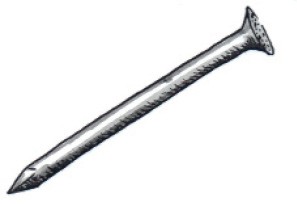 yster spyker vir die yster kern |
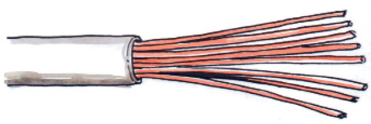 geïsoleerde draad |
|
|
|
|
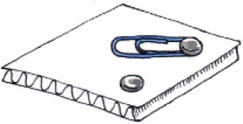 skakelaar gemaak van karton, staal skuifspeld en duimspykers |
Figuur 19: Materiaal wat gebruik word om ’n elektromagneet te maak
tuisgemaakte skakelaar
4 selle, met isoleerband aan mekaar verbind in serie
ysterspyker
geïsoleerde koperdraad
Figuur 20: Elektromagneet

Begin om jou hyskraan en elektromagneet te bou (30 minute)
Maak seker dat jy die model hyskraan en die elektromagneet in die gegewe tyd klaarmaak. Gee genoeg aandag aan die tyd wat vir elk van die take gegee word. Jy gaan dalk nie ekstra tyd hê nie.
Onthou om veilig en netjies te werk. Onthou om aan elke persoon in die groep ’n taak of deel van die model te gee om te maak. Elke persoon moet ewe hard werk om die model te bou. Pak jou model aan die einde van die les in ’n boks weg en onthou om julle name daarop te skryf.
Soms werk ’n ontwerp nie uit nie. Jy mag veranderinge maak en dinge by die model voeg vir jou model om te werk.
- • Jy het 180 minute (6 × 30 minuut lesse) om die hyskraan aanmekaar te sit en om ’n elektromagneet te bou.
- • Die tyd wat hieronder aangedui word, is ’n riglyn vir jou om te volg.
- • Onthou om te evalueer soos jy werk.
- • Jou groep se model, met die elektromagneet, sal geassesseer word.[12]
Berei voor om te bou
1. Kry al jou materiaal en gereedskap bymekaar.
2. Rol soveel papierspykers as wat jy dink jy gaan nodig hê. Rol ’n paar ekstra.
3. Begin om die hyskraan en die boks waarop dit gemonteer gaan word, te maak.
4. Begin om die ysterstukke toe te draai met die geïsoleerde draad.

Week 3
Bou die hyskraan (30 × 4 = 120 minute)
Bou die raam van die hyskraan (30 minute)
- • Maak seker dat die verbindings/skarniere
goed en sterk gemaak is.
Heg die raam aan die basis (30 minute)
- • Meet strukturele dele akkuraat. Dit sal bydra tot
’n stabiele hyskraan wat behoorlik kan balanseer.Oefen meting
Gebruik ’n goeie kwaliteit, ferm liniaal.
Maak seker die liniaal is gemerk in millimeter. Begin meet by nul (0) en nie op die end van die liniaal nie.
Bou die krukarm-en-katrol (30 minute)
- • Maak die krukarm en plaas dit in die montering.
- • Maak die katrol.
Heg die katrol aan die raam (30 minute)
- • Maak seker dat die raam sterk en stewig genoeg
is waar die katrol geheg moet word. - • Heg die katrol aan die hyskraan.
Gebruik die regte gereedskap
Gebruik ’n skerp skêr of ’n kunsmes om die garing, papier of karton te sny.
Gebruik ’n skerp spyker of ’n els om gate mee te maak
[12]

Week 4
Bou die elektromagneet (30 × 2 = 60 minute)
Maak die elektromagneet (30 minute)
- • Heg die katrol aan die hyskraan.
- • Voltooi die elektromagneet.
Bou en sit die elektriese stroombaan aanmekaar (30 minute)
- • Sit die elektriese stroombaan vir die elektromagneet aanmekaar.
- • Heg die stroombaan aan die model hyskraan.
- • Voeg die teenwig aan die hyskraan sodat dit balanseer en nie omval nie.
- • Evalueer en maak veranderinge soos jy dink nodig is.

Hersien en teken: skuinstekening (30 minute)
Skuinstekening:
|
|
Skaal:
|
|
Maak ’n skuinstekening
Werk op jou eie.
1. Kies een deel van jou model om as ’n skuinstekening te teken.
2. Jy moet hierdie komponent volgens skaal teken. Jy kan dit groter as jou model teken. Indien jy dit twee maal groter as die ware grootte gaan teken, sal die skaal 2:1 wees.
3. Teken die komponent op die geruite papier op die oorkantste bladsy.
4. Gebruik die spasie hieronder om eers ’n rowwe skets te maak.
Maak seker dat die leerders ʼn komponent van die hyskraan gekies het wat hulle
genoegsaam sal uitdaag. Nie die basis alleen nie. Wanneer die skuinstekening
geassesseer word maak seker dat die skaal korrek is en op die geruite papier
aangeteken is. Maak seker dat hulle die tekening skuins teken soos wat hulle geleer het.
julle moet potlode gebruik om verkeerde lyne uit te vee en oor te teken indie nodig.

Ontwikkel ‘n evaluasie vorm (30 minute)
Jou hyskraan met sy elektromagneet is nou voltooid. Jy moet nou ’n kontrolelys ontwikkel om jou hyskraan te beoordeel en om te sien hoe goed jy jou spesifikasies nagekom het.
- • Voldoen dit aan die kriteria wat jy as spesifikasies identifiseer het?
- • Werk die elektromagneet goed?
Om die hyskrane te beoordeel, gaan jy ’n evaluasie vorm moet ontwerp. Jy het verlede kwartaal ’n evaluasie vorm ontwikkel om jou toring te beoordeel.
Ontwikkel ’n evaluasie vorm
1. Werk op jou eie. Hierdie aktiwiteit gaan geassesseer word. Maak ’n lys van die kenmerke wat die hyskraan model moet hê. Gebruik jou lys van spesifikasies om jou hiermee te help.[5]
Hier is ’n voorbeeld:
|
Die hyskraan moet reg werk. |
|
|
|
Die hyskraan moet metaalvoorwerpe kan oplig. |
|
|
|
Die hyskraan struktuur moet sterk en stewig wees, en moet bo op ʼn soliede raamwerk, wat deur triangulasie versterk is, gebou wees. |
|
|
|
Die hyskraan moet ʼn elektromagneet hê wat van die krukarm-en-katrol meganisme hang. Die |
|
|
|
Die arm wat die elektromagneet ondersteun moet ook in staat wees om op en af te beweeg, en die hyskraan moet in staat wees om, om sy eie as te kan roteer. |
|
|
|
Die elektromagneet moet aan- en afgeskakel kan word om die metaal op te tel en te laat val. |
|
|
|
Die elektromagneet moet sterk genoeg wees om staal skuifspelde, spykers en |
|
|
|
Dit het ʼn sagte kern gemaak van ʼn bondel kort lengtes draad, of draad wat met |
|
|
2. Werk as ’n span.
(a) Kombineer julle individuele vorms as een, gesamentlike evaluasie vorm.
(b) Sluit ’n drie-punt skaal in. 3: Goed, 2: Gemiddeld, 1: Swak.
Hierdie evaluasie vorm gaan gebruik word om jou eie model en ook die modelle wat die ander groepe gebou het, te evalueer.
3. Gebruik die evaluasie vorm om jou eie model te evalueer.

Week 5
Evalueer die ander modelle (30 minute)
Wanneer jy werk evalueer, moet jy jou bes doen om objektief en regverdig te wees. Dit beteken dat jy nie hoë punte aan jou vriende kan gee nie, tensy hulle dit werklik verdien. Jy moet aan hulle punte gee wat hulle verdien volgens die werk wat hulle gedoen het, en jy moet die punte wat jy toeken kan verduidelik en regverdig. Dit beteken dat jou opmerkings geldig moet wees.
Om objektief te wees beteken om iets te beoordeel vir wat dit is, sonder om emosioneel of persoonlik te wees
Evalueer die modelle van die ander groepe
1. Werk as ’n span.
2. Kopieer die evaluasie vorm drie of vier keer
3. Evalueer die modelle van drie of vier spanne. Onthou om die name van die spanne wat jy evalueer, neer te skryf.

Berei voor vir die aanbieding (30 minute)
Elke span gaan ‘n mondelinge aanbieding lewer, waar hulle aan die klas hul planne en die funksionering van die model gaan verduidelik.
Die aanbieding moet langer as vyf minute wees, maar korter as sewe minute. Die klas het drie lesse (90 minute) om al die aanbiedings te voltooi.
1. Beplan jou aanbieding.
- • Al die lede van die groep moet deel wees van
die aanbieding. - • Besluit wat elke persoon gaan doen.
- • Elke persoon moet praat oor die werk wat hulle
gedoen het en ook die rol wat hulle in die projek
gespeel het. - • Een leerder moet die ontwerpskets wys en
verduidelik. - • ’n Ander leerder moet die stroombaandiagram
verduidelik en op die bord teken. - • Een leerder moet wys hoe die hyskraan met die
elektromagneet werk.Wenke vir die aanbieding van jou werk:
Staan regop en kyk na die klas wanneer jy praat.
Moet nie jou aanbieding aflees nie.
Praat duidelik; moet nie mompel of fluister nie. Almal moet jou kan hoor.
Weet wanneer dit jou beurt is om te praat.
Hou by die tydsbeperking
- • ’n Ander leerder moet praat oor die probleme wat die groep ervaar het.
- • Sluit die volgende inligting by jou aanbieding in:
- Ŋ Hoe ’n elektromagneet werk
- Ŋ Hoe om ’n elektromagneet sterker te maak
- Ŋ Hoekom dit belangrik is om metale te sorteer
- • Maak ’n artistiese tekeninge van jou model hyskraan met sy elektromagneet.
- • Besluit wie gaan begin met die aanbieding en wie gaan volgende praat. Weet wanneer dit jou beurt is.
2. Gebruik die res van hierdie les om jou aanbieding te oefen. Jy sal dalk tyd by die huis moet spandeer hiervoor. Jy het baie tyd om te oefen, want met die volgende les gaan jy terugkyk op jou werk.

Nabetragting en evaluasie (30 minute)
Nabetragting beteken om terug te kyk. Deur terug te kyk op wat jy gedoen het en hoe jy die taak voltooi het, is ’n belangrike leeraktiwiteit. Dit help jou om die foute wat jy gemaak het, te identifiseer asook dit wat jy goed en reg gedoen het. Hieruit sal jy leer om nie weer dieselfde foute te maak nie, en ook hoe om te verbeter op dit wat jy goed gedoen het.
Nabetragting en evaluasie van jou eie werk en bydrae
Werk op jou eie. Hierdie aktiwiteit word geassesseer.
1. Skryf ten minste vyf aktiwiteite neer waarop jy wil terugkyk. Kies ten minste:
- • een praktiese aktiwiteit,
- • een teken aktiwiteit,
- • een aktiwiteit waar jy vrae moes beantwoord, en
- • een groep aktiwiteit.
2. Maak ’n merkie in ‘n blokkie teenoor die gesig om te wys hoe jy oor elke aktiwiteit gevoel het. [5]
|
Beskrywing van die aktiwiteit |
|
|
|
|
|
|
|
|
|
|
|
|
|
|
|
|
|
|
|
|
|
|
|
|
|
|
|
|

Lewer jou aanbieding (30 minute)
Dit is belangrik dat almal deelneem omdat die hele groep deur jou onderwyser geassesseer gaan word. Jy gaan drie lesse (90 minute) hê om die aanbiedinge te voltooi.
Mondelinge aanbieding
1. Elke persoon se mondelinge aanbieding gaan afsonderlik geassesseer word.
2. Jou onderwyser gaan ’n evaluasie vorm soos die een hieronder gebruik om jou mondelinge aanbieding te assesseer.
|
Kriteria |
Goed |
Bevredigend |
Swak |
|
Die leerder praat duidelik sodat almal kan hoor. |
|
|
|
|
Die leerder praat met selfvertroue, ken die werk en weet wat hy/sy wil sê. |
|
|
|
|
Die leerder maak oogkontak met leerders wat voor sowel as agter in die klas sit. |
|
|
|
|
Die leerder verduidelik sy/haar rol in die projek. |
|
|
|
|
Die leerder wys en demonstreer die model/tekening/diagram. |
|
|
|
Jy kan addisionele kriteria by die lys voeg as jy dink dat dit tot die assessering
sal bydra. Die punt is uit ʼn moontlike 10, so jy kan soveel kriteria as wat jy dink
nodig is, byvoeg.
Jy moet elke leerder van elke groep se aanbieding assesseer in terme van die
kriteria waarop jy besluit het, dus is dit belangrik dat elke lid van die groep
deelneem aan die aanbieding. Dit moet beklemtoon word voor die aanbieding.
Daar is 90 minute vir die aanbiedings, so elke groep sal genoeg tyd hê om ʼn
uitgebreide aanbieding te lewer. Maak seker dat hulle goed genoeg voorberei het.

Week 6
Aanbiedings vervolg (30 × 2 = 60 minute)
Alle aanbiedings moet teen die einde van hierdie week voltooid wees.